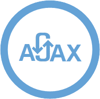
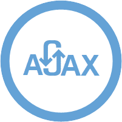

Jane Doe
Master of shadows and the Internet!

About...
Hello! I'm an extremely driven and creative Full Stack Developer who is currently open for career oportunities as a front-end or back-end web developer in the Greater Seattle Area.
I'm a recent graduate of Coding Dojo, a coding school located in Bellevue, WA that teaches 3 full stacks in 3 months. I'm capable of learning new technologies very quickly, and am always looking for opportunities to furhter expand my skills and grow as a developer.
Continue reading...La Mode

La Mode is an Ecommerce website for designed to market various clothing products. Users are able to view the available garments, select their desired quantity, and compile a shopping cart for making a final purchase.
Technologies:


 



La Mode

Family Contacts is a free application for managing, sharing, and visualizing your family relationships for both extended and immediate family. As an essential feature of the project, your log-in information determines who you can see and reveals how people are related to you.
Technologies:


fiveEleven

Five Eleven is a data visualization project build on the Python software stack. The application transforms the developer job-hunt into a more visual, user friendly experience. Based on location, technology popularity, and other vast data sets, users may easily visualize the varying sizes and concentrations of the junior developer job market across the nation.
Technologies: